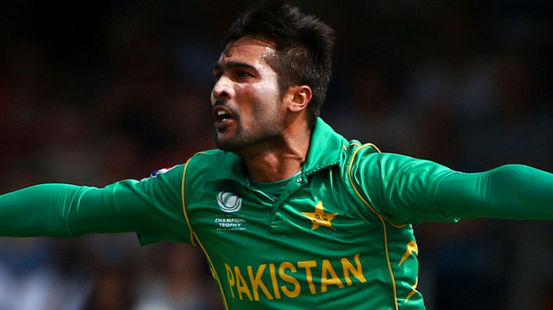
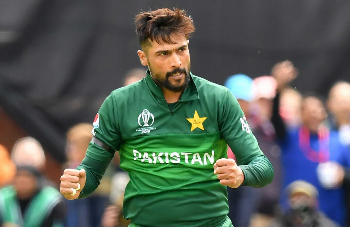
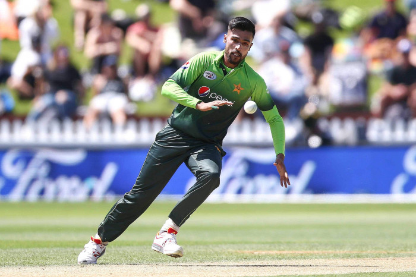

Favorite Personality In Sports
M.Amir



Intro:
Mohammad Amir is a Pakistani cricketer who was born on April 13, 1992, in Gujjar Khan, Pakistan.
He is a left-arm fast bowler who made his debut for the Pakistani cricket team in 2009, at the age of just 17.
Amir gained fame and recognition for his impressive performances in the 2009 ICC World Twenty20 tournament, where he helped Pakistan win the championship.